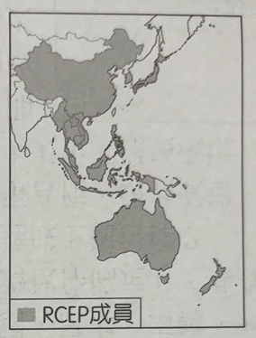
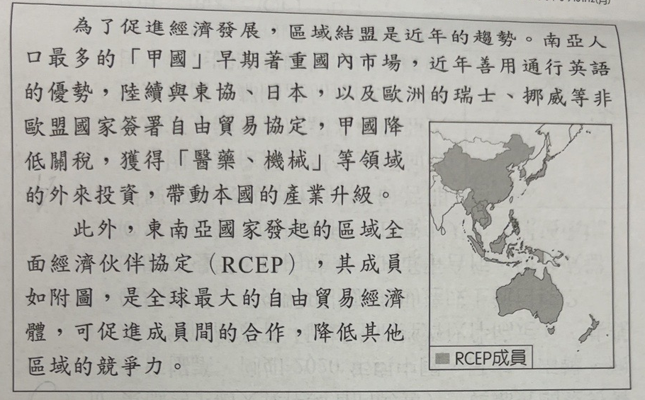
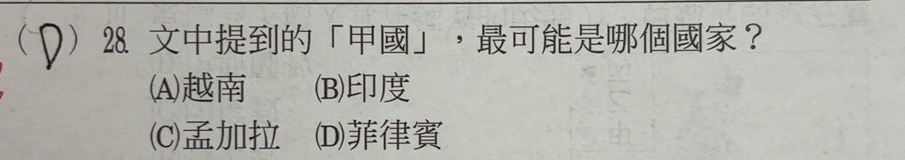
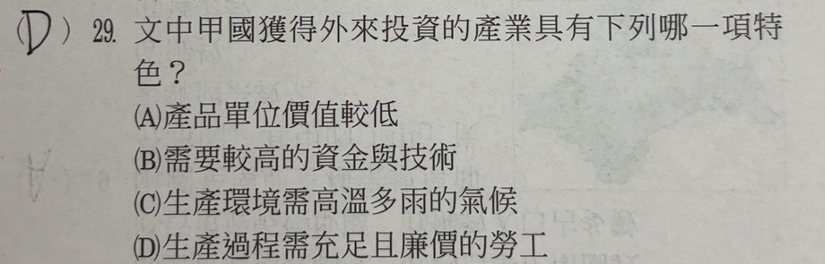
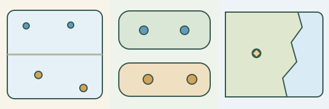
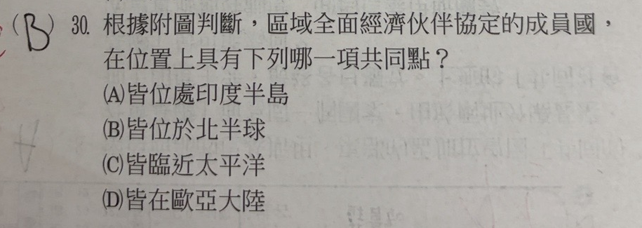

完整原題
作答所需文章／材料
為了促進經濟發展，區域結盟是近年的趨勢。南亞人口最多的「甲國」早期著重國內市場，近年善用通行英語的優勢，陸續與東協、日本，以及歐洲的瑞士、挪威等非歐盟國家簽署自由貿易協定，甲國降低關稅，獲得「醫藥、機械」等領域的外來投資，帶動本國的產業升級。 此外，東南亞國家發起的區域全面經濟伙伴協定（RCEP），其成員如附圖，是全球最大的自由貿易經濟體，可促進成員間的合作，降低其他區域的競爭力。
地理第28題｜國家線索的交集
地理第29題｜投資產業的需求
地理第30題｜成員分布的共同點
先想一想，再查看答案、解說與原圖
地理第28題｜國家線索的交集
分享原卷｜共文第28～30題中的第28題 · 首次出題日期 2026-10-30 · 原AI對話 ↗
逐項解析
| 選項與原句 | 判讀 | 句意與判斷理由 |
|---|---|---|
| (A) 越南 | 不選 | 越南位於東南亞，不符合南亞的線索。 |
| (B) 印度 | 應選 | 印度符合南亞人口最多，也符合文章的英語及產業發展背景。 |
| (C) 孟加拉 | 不選 | 孟加拉雖位於南亞，但人口少於印度。 |
| (D) 菲律賓 | 不選 | 菲律賓雖使用英語，但位於東南亞，不符合核心區位條件。 |
詳細說明與解題步驟
先抓最有辨識力的兩條條件：南亞、人口最多。四個選項中，印度與孟加拉屬南亞，但印度人口較多，故選B。越南和菲律賓屬東南亞；不能只看到「通行英語」就選菲律賓，而漏掉地理位置。通行英語、工業投資及對外經貿是輔助辨認線索，不是每個印度人都使用英語、也不是所有印度產業都相同。前段談甲國，後段轉談RCEP，不能因同篇文章提到印度就把印度當作該成員圖的著色國。
參考：[印度政府國家資料](https://www.eoiriga.gov.in/page/fact-sheet-of-india/)；[RCEP官方概要](https://www.dfat.gov.au/trade/agreements/in-force/rcep)。
① 南亞先排除東南亞
印度、孟加拉在南亞；越南、菲律賓在東南亞。分類圖不按人口面積比例繪製。
② 南亞內再比人口
印度人口多於孟加拉，符合「南亞人口最多」。長條只表示高低比較，不另編統計數值。
③ 前後兩段別混在一起
通行英語是輔助線索；前段甲國是印度，後段RCEP成員則另看原圖，印度不在其中。
④ 先分區位，再合併人口與語言線索
答案 B：印度
- 兩個核心條件：南亞＋人口最多。
- 菲律賓只符合英語線索，不符合區位。
- 同文提到印度，不代表它是RCEP成員。
核對註記：已實看同一原卷共同文章、成員地圖含圖例與第28～30題全部選項。日期採使用者原問日期，不冒稱考試日。
原圖（僅本題）


地理第29題｜投資產業的需求
分享原卷｜共文第28～30題中的第29題 · 首次出題日期 2026-10-30 · 原AI對話 ↗
逐項解析
| 選項與原句 | 判讀 | 句意與判斷理由 |
|---|---|---|
| (A) 產品單位價值較低 | 不選 | 不是醫藥、機械共同的主要特色。 |
| (B) 需要較高的資金與技術 | 應選 | 研發、精密設備、工程與專業人才，都仰賴資金與技術。 |
| (C) 生產環境需高溫多雨的氣候 | 不選 | 這是某些農業的環境條件，不能套用為本題兩產業的共同條件。 |
| (D) 生產過程需充足且廉價的勞工 | 不選 | 大量低成本勞工是典型勞力密集線索；本題重點在研發與設備。 |
詳細說明與解題步驟
回到文章指定的產業：「醫藥、機械」。醫藥需要研發、實驗設備與專業人力；機械需要設計、設備與製造技術，因此共同特性是資金與技術投入較高，選B。不能把印度人口多直接轉成所有產業都以大量廉價勞工為主要條件。高溫多雨不是這兩種製造業共同的生產必要條件，單位價值較低也不是本題要辨認的共同核心。這是比較文章所指產業，不是說它們完全不需要勞力或每件產品的單價必然都高。
參考：[印度製藥部研發與創新方案](https://pharma-dept.gov.in/prip/)；[印度政府投資與專門機械、技術合作說明](https://www.pib.gov.in/PressReleasePage.aspx?PRID=2237451&lang=1®=1)。
① 醫藥重視研發與設備
研發、實驗設備、專業人才都需要投入。插畫是現代概念情境，不冒稱特定藥廠實景。
② 機械重視工程技術
精密零件、設備與製造技術，不能只靠大量廉價勞工完成。
③ 兩者共同需要資金與技術
本題比的是文章所指的醫藥、機械，不是由印度人口多就猜所有產業靠廉價勞工。
④ 產業名稱先找準，再判斷投入要素
答案 B：需要較高的資金與技術
- 回文章找醫藥、機械兩產業。
- 共同重點是研發、設備與專業技術。
- 不是說完全不用勞力或每件產品都高價。
核對註記：已實看同一原卷共同文章、成員地圖含圖例與第28～30題全部選項。日期採使用者原問日期，不冒稱考試日。
原圖（僅本題）

地理第30題｜成員分布的共同點
分享原卷｜共文第28～30題中的第30題 · 首次出題日期 2026-10-30 · 原AI對話 ↗
逐項解析
| 選項與原句 | 判讀 | 句意與判斷理由 |
|---|---|---|
| (A) 皆位處印度半島 | 不選 | 原圖有中國、日本、澳洲等，並非皆在印度半島。 |
| (B) 皆位於北半球 | 不選 | 澳洲與紐西蘭是南半球反例，足以排除「皆」。 |
| (C) 皆臨近太平洋 | 應選 | 依本圖亞太區域位置概括，C最符合；不等於每國都有太平洋海岸。 |
| (D) 皆在歐亞大陸 | 不選 | 澳洲與紐西蘭屬大洋洲，並非全部在歐亞大陸。 |
詳細說明與解題步驟
選項都有「皆」，先找反例。原圖的澳洲、紐西蘭位於南半球，所以不是全部在北半球；兩國也屬大洋洲，可排除全部在歐亞大陸。中國、日本、澳洲等並不位處印度半島，A也不合。圖中成員分布集中在東亞、東南亞及大洋洲的亞太區域，四項中以C「皆臨近太平洋」最符合本圖的區域概括。
這裡的「臨近」不能改寫成「每國都直接瀕臨太平洋」：例如寮國是內陸國，並沒有海岸線。也不能把文章前段的印度當成後段RCEP成員；印度已退出RCEP談判，原圖沒有把印度塗成成員。本題依原圖區域分布判斷，不宣稱成員到海岸的距離相同。
參考：[紐西蘭外交貿易部RCEP成員清單](https://www.mfat.govt.nz/en/trade/free-trade-agreements/free-trade-agreements-in-force/regional-comprehensive-economic-partnership-rcep/rcep-overview)；[聯合國內陸國資料](https://www.un.org/en/landlocked/about-landlocked-developing-countries)。

① 澳洲、紐西蘭在南半球
圖中灰線示意赤道；兩個橘點位在南側，因此不是所有成員都在北半球。
② 澳洲、紐西蘭也不在歐亞大陸
兩國屬大洋洲，同時排除「皆在歐亞大陸」；中國、日本等也不是位處印度半島。
③ 臨近不等於每國都臨海
C按圖中的亞太區域分布概括。寮國是內陸國，不能教成每個成員都有太平洋海岸。
④ 看到「皆」，用反例檢查全體
答案 C：皆臨近太平洋
- 看澳洲、紐西蘭，排除B與D。
- A也有中國、日本等反例。
- 臨近是本題區域概括，不等於直接瀕臨海洋。
核對註記：已實看同一原卷共同文章、成員地圖含圖例與第28～30題全部選項。日期採使用者原問日期，不冒稱考試日。
原圖（僅本題）
